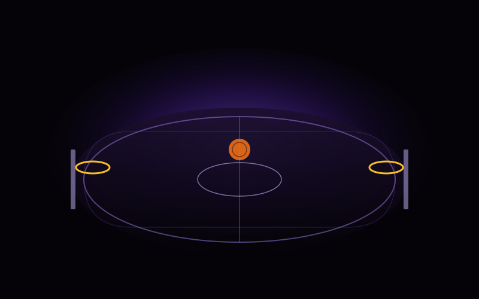
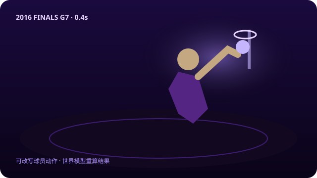

无法到场
也能改写终场
用世界模型把碎片赛况变成可互动、可预测的沉浸体验

已验证 · 品牌动效
概念 · 世界模型入口
选择身份
你想站在谁身边？
滑动球星卡 · 锁定本场视角
概念模拟 身份将驱动世界模型初始状态
双模式入口
今晚怎么玩？
过往高光改写 · 未来赛事模拟
已验证 双入口信息架构与卡片布局
高光互动
改这一下
2016 Finals G7 · 0.4s

0:000.4s 关键格
选择球员动作 概念 · 动作改写
已验证 高光回放帧浏览
未来模拟
下一场，你来布阵
选核心球员 · 设定节奏
比赛节奏 概念 · 赛果模拟
我的高光卡
终场改写成功
突破上篮 · +2 · 加时锁定
已生成分享预览（演示）